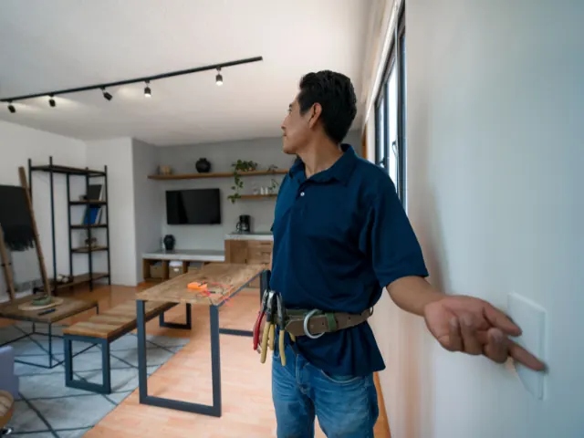

Partnerbijdrage
Slimme verlichting: de kracht van zigbee dimmers
Gepubliceerd op 26 september 2025

Ben je klaar om je huis een slimme upgrade te geven? Dan zijn zigbee dimmers misschien wel de perfecte oplossing voor jou. Deze innovatieve technologie biedt niet alleen gemak, maar helpt je ook om energie te besparen en je wooncomfort te verhogen. Laten we eens dieper duiken in wat zigbee dimmers precies zijn en waarom ze zo’n goede keuze zijn voor jouw smart home.
Wat zijn zigbee dimmers?
Zigbee dimmers zijn slimme lichtschakelaars die gebruikmaken van het Zigbee-protocol. Dit is een draadloze communicatietechnologie die speciaal is ontworpen voor slimme apparaten in huis. Met deze dimmers kun je je verlichting eenvoudig bedienen via een app op je smartphone of tablet, of zelfs met spraakcommando’s als je een slimme speaker hebt. Ze werken naadloos samen met andere apparaten in je smart home-systeem, waardoor je volledige controle hebt over de verlichting in elke kamer.
Hoe werkt het?
Het Zigbee-protocol maakt gebruik van een mesh-netwerk, wat betekent dat elk apparaat in het netwerk signalen kan doorgeven aan andere apparaten. Dit zorgt voor een stabiele en betrouwbare verbinding, zelfs als sommige apparaten verder van de centrale hub verwijderd zijn. Hierdoor kun je zonder problemen meerdere dimmers door je hele huis installeren.
Waarom kiezen voor zigbee dimmers?
Energie-efficiëntie
Een van de grootste voordelen van deze dimmers is hun bijdrage aan energie-efficiëntie. Door de verlichting te dimmen, verbruik je minder stroom, wat niet alleen goed is voor het milieu, maar ook voor je energierekening. Bovendien kun je eenvoudig tijdschema’s instellen zodat lichten automatisch uitgaan wanneer ze niet nodig zijn.
Gebruiksgemak
Deze dimmers zijn super eenvoudig te installeren en te gebruiken. Je hoeft geen techneut te zijn om ze aan de praat te krijgen. De meeste modellen kunnen gewoon in plaats van je bestaande lichtschakelaars worden geïnstalleerd. Daarna hoef je ze alleen nog maar te koppelen aan je smart home-systeem en je bent klaar om te gaan.
Compatibiliteit
Een groot voordeel van deze dimmers is hun compatibiliteit met verschillende smart home-systemen zoals Google Home, Amazon Alexa en Apple HomeKit. Dit maakt het gemakkelijk om al je slimme apparaten centraal te beheren en zorgt ervoor dat alles soepel samenwerkt.
Duurzaamheid
Veel zigbee dimmers zijn ontworpen met duurzaamheid in gedachten. Ze gaan langer mee dan traditionele schakelaars en helpen je om bewuster om te gaan met energieverbruik. Dit past perfect bij de groeiende trend van milieubewustzijn onder consumenten.
Trends in slimme woningtechnologie
De populariteit van slimme woningtechnologie blijft groeien, en dat is niet zonder reden. Mensen willen meer controle over hun leefomgeving, comfort verhogen en tegelijkertijd kosten besparen. Hier zijn enkele trends die relevant zijn:
– Integratie van slimme apparaten: Steeds meer huishoudens kiezen ervoor om meerdere slimme apparaten aan hun netwerk toe te voegen, waardoor een volledig geïntegreerd smart home ontstaat.
– Focus op energie-efficiëntie: Met stijgende energiekosten zoeken mensen naar manieren om hun verbruik te optimaliseren zonder in te leveren op comfort.
– Eenvoudige installatie: Gebruikers willen producten die eenvoudig zelf te installeren zijn zonder hulp van professionals.
– Spraakbediening: De mogelijkheid om apparaten met spraakcommando’s te bedienen wordt steeds populairder dankzij slimme speakers zoals Google Home en Amazon Echo.
– Milieuverantwoordelijkheid: Consumenten worden zich steeds bewuster van hun ecologische voetafdruk en kiezen vaker voor duurzame producten.

Hoe begin je met zigbee dimmers?
Als jij klaar bent om de stap naar slimme verlichting te zetten, dan is het belangrijk om eerst goed onderzoek te doen naar welke producten het beste bij jouw behoeften passen. Een goede plek om te beginnen is door meer informatie op zigbee dimmers op Ecobright.nl.
Daarnaast kun je ook kijken naar specifieke modellen zoals een led inbouwdimmer, die perfect passen bij moderne interieurs en eenvoudig te installeren zijn.
Zigbee dimmers bieden een uitstekende manier om jouw huis slimmer, energiezuiniger en comfortabeler te maken. Of je nu net begint met het verkennen van smart home-technologie of al een ervaren gebruiker bent, deze dimmers passen perfect bij jouw behoeften.
Terug naar de beginpagina